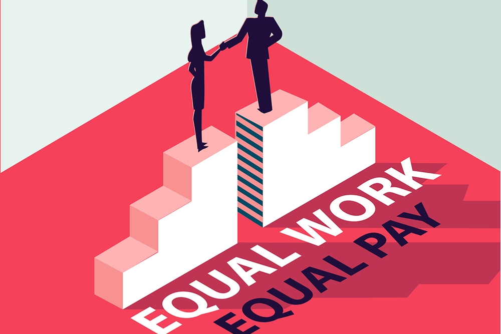

Core Concepts
Women's rights
Equal Employment

India has several laws and other measures to promote equal employment for women, including:
-
Equal Remuneration Act, 1976
-
This act mandates that women and men receive equal pay for equal work. It was subsumed into the Code on Wages, 2019.
-
Constitution of India
- The Constitution's fundamental rights guarantee equality of opportunity in employment and prohibit discrimination based on sex. Articles 14, 15, 15(3), 16, 39(a), 39(b), 39(c), and 42 are particularly relevant.
-
Protection of Women from Sexual Harassment (PoSH) Act
- This act was enacted to protect women's fundamental rights in the workplace. However, it only addresses sexual harassment and doesn't cover gender-based discrimination unless it's combined with sexual harassment.
- State laws
- Some states have laws that require establishments to provide protection for women's dignity, honor, and safety. These laws may also mandate facilities like shelters, restrooms, and night crèches.
- Startups and companies
- Some companies, like Amazon, Mahindra Logistics, Uber, and Ola, have created job opportunities for women in their delivery and driving services.
- Training and upskilling
- Organizations like WiLAT and Hey DeeDee provide training and employment opportunities for women in the logistics and transport sectors.